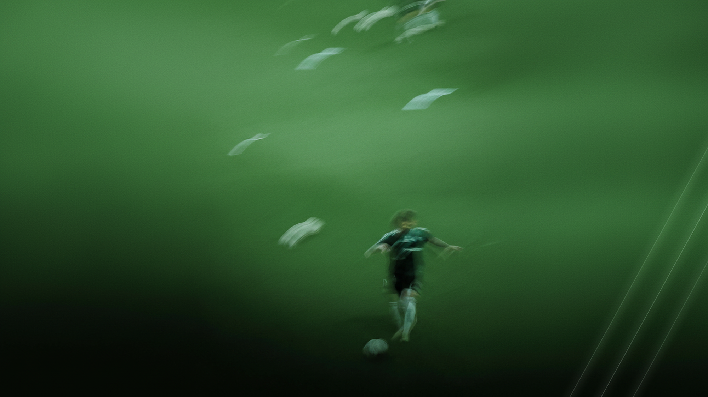

Ile naprawdę znaczy sen w profilaktyce urazów
Poniżej siedmiu godzin ryzyko urazu rośnie prawie dwukrotnie. Co z tym zrobić w sezonie.
Krótkie teksty o tym, jak prowadzimy powrót do sportu — pisane przez ten sam sztab, który robi to na co dzień.
Umów wizytęDlaczego o powrocie decyduje symetria siły uda, a nie liczba tygodni od operacji. Jak wyglądają kolejne progi i po czym poznać, że ostatni jest naprawdę zaliczony.

Poniżej siedmiu godzin ryzyko urazu rośnie prawie dwukrotnie. Co z tym zrobić w sezonie.

Zestaw prób, który stosujemy u zawodników — i jak wygląda u amatora.

Jak dawkować pracę ekscentryczną w tygodniu treningowym, żeby chroniła, a nie dobijała.

Co zmienia się w jedzeniu, gdy w weekend gra się mecz, a w środku tygodnia są dwa treningi.

Wywiad, badanie i obrazowanie — jak składamy z tego decyzję o dalszym leczeniu.

Skąd się bierze, dlaczego wraca po każdej pauzie i nad czym naprawdę trzeba popracować.
Piętnaście minut wystarczy, żeby ustalić, czego potrzebujesz. Bez skierowania i bez kolejki.